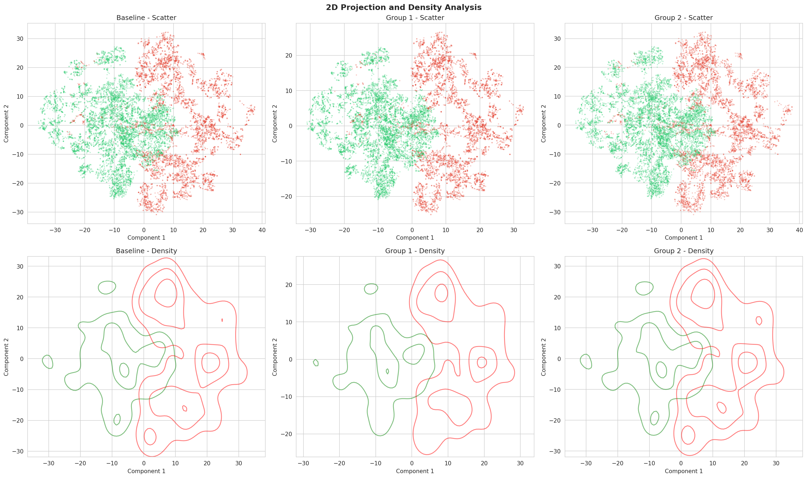

纯图像算法
🔍 翻拍模型重构
背景：面对公司资源治理要求及旧翻拍模型存在的不同程度的空值率问题。
工作：采集过去一年约100万白样本及20万黑样本数据，从零构建并训练了新一代翻拍检测模型。
效果：
FPR 0.1% → TPR 99.5%
解决原翻拍历史工程缺陷，能力进一步提升，以极低的资源消耗满足了业务需求
🎭 换脸模型升级
背景：应对以Stable Diffusion为代表的新一代AIGC换脸攻击。
工作：基于最新的攻击样本，对纯图像的换脸检测模型进行了数据重刷和结构优化。
效果：
FPR 0.1% → TPR 82.4%
成为多模态模型前置的快速图像初筛层
图+文：多模态综合决策模型
这是线上防线的决策核心，融合了图像、文本、行为等多维度信息。
⚡ 技术攻坚：解决"过度自信"难题
在训练1B参数量级的多模态模型时，我们遇到了分数两极化的业界难题。通过引入 Mixup混合样本 和 熵正则化 两个关键Trick， 成功地鼓励模型输出更平滑、校准性更好的分数，为后续的策略部署提供了更大的操作空间。
FPR 0.1% → TPR 95.1%
成为整个实时小模型体系的核心防控能力
🔬 前瞻性探索：模型"可蒸馏能力"验证
为确保当前架构具备向未来"大模型→小模型"蒸馏的潜力，我们设计了前瞻性验证实验。
基线组
72.0%
仅图像+基础信息
组1 (具象概念)
83.1%
额外提示白色T恤男性
组2 (抽象概念)
73.4%
提示边缘融合检测

✅ 结论：该实验定性地证明了当前1B小模型已具备良好的具象语义理解能力， 是"可被蒸馏"的优秀载体，为S2启动大-小模型的蒸馏工作打好基础。
图+文+关系：实时图模型
📈 实时图模型初步探索
工作：为应对团伙性攻击，我们启动了实时图模型的预研，并使用GBDT跑出了一个基线版本。
效果：
FPR 0.1% → TPR 71.4%
现状：由于后续工程资源暂无法匹配，该项目暂时搁置，但已为S2的正式启动完成了初步的技术验证。